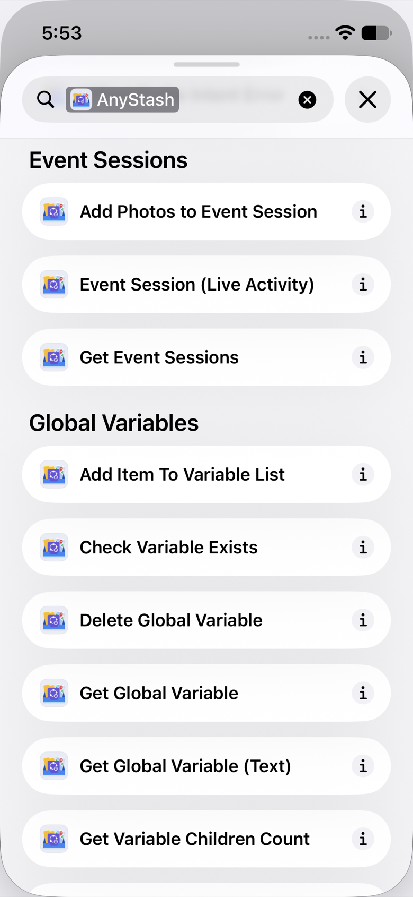
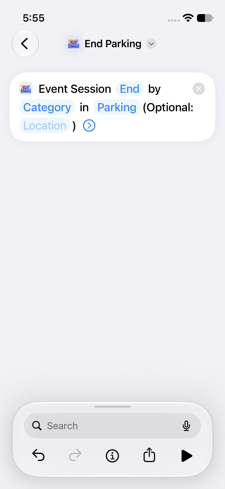
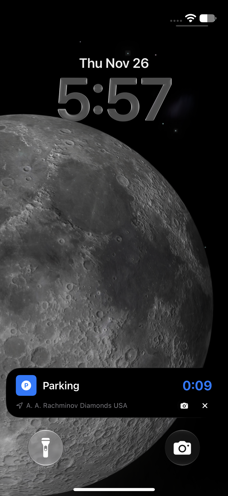
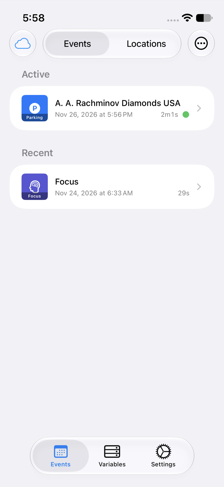
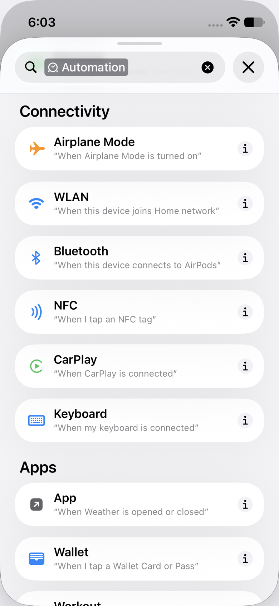
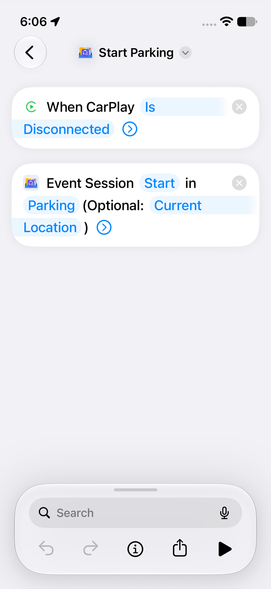

Parking session
What you’ll build
Two shortcuts: Start Parking (Event Session with optional Live Activity) and End Parking. You’ll run them by hand, confirm the session under Events in AnyStash, then wire Automations—CarPlay connect / disconnect if your car actually uses CarPlay, otherwise car Bluetooth (shared links often default to CarPlay).
This is a parking Event Session: optional Live Activity on the Lock Screen and Dynamic Island while you’re away, then duration, location, and history under Events in AnyStash.
Add Shortcut and Build steps use Event Session (Live Activity). Prefer these links for new setups. Still on older Start/Stop Live Activity shortcuts? See Support → legacy Live Activity.
Add Shortcut
Or rebuild the same actions below. Shared Start/End Parking may already include CarPlay connect/disconnect Automations—see Add to an Automation (confirm CarPlay works on your car, or switch to Bluetooth).
Build it yourself
-
In the Shortcuts app, create a new shortcut. Search AnyStash and add Event Session (Live Activity).

Add Event Session (Live Activity) from AnyStash -
Configure the action (parking essentials first):
- Phase: Start
- Category: Parking
-
Location (core for parking): set the optional
Location parameter to Shortcuts’
Current Location (system variable). This uses
the Shortcuts app’s location access (iOS
Settings → Shortcuts)—not AnyStash’s. If Shortcuts has never
been allowed Location, grant it there (or when iOS prompts) or
the variable may be empty.
Another way to attach location?
On the same Event Session (Live Activity) action, open its details and turn on the AnyStash parameter Use Current Location (If Already Allowed). That path uses AnyStash location access: Shortcuts never shows a permission dialog—AnyStash must already have Location (When In Use) (AnyStash → Settings → Permissions, or grant in the app). If access is missing, the action still succeeds but skips location. If Location is set, Use Current Location is ignored.
- Everything else: leave the defaults. Show Live Activity is On by default. For other fields (timer, reminder, when the Island is full, ending by a specific session), see Parameter guide below.

Event Session · Start in Parking · Current Location (other fields left at defaults; Show Live Activity On) -
Create a second shortcut named like End Parking: add Event Session (Live Activity) again, set Phase to End, End By to Category, and Category to Parking (do not run it yet). That ends the session and dismisses a linked Live Activity.
Ending a specific session?
To end one session from a prior action’s result (instead of by Category), see Parameter guide → End.

Event Session · End by Category in Parking
Try it
Run the shortcuts you built (or imported). Confirm the Event Session under Events; with Show Live Activity On, also confirm the Island—not while configuring parameters above.
-
Run Start Parking. Confirm an in-progress Parking row under Events. With Show Live Activity On, also confirm the Live Activity on the Lock Screen or Dynamic Island (timer / title). If the Island cannot appear, the session can still succeed—check Events.

Parking Live Activity on the Lock Screen after start -
Run End Parking. The Event Session should end in Events; a linked Live Activity should dismiss with it.
View in the app
AnyStash is for reviewing what Shortcuts already created—you do not need to start or build the session inside the app for this example.
-
After Start Parking, open AnyStash → Events and confirm the in-progress Parking session under Active.

Events → Active — in-progress Parking session -
After End Parking, return to Events and confirm the finished session under Recent.

Events → Recent — finished Parking session
Add to an Automation
Real parking flows usually start or stop without opening Shortcuts by hand. A common pair: When CarPlay disconnects → start parking; When CarPlay connects → end parking—or the same pairing with car Bluetooth.
CarPlay check first: Shared Start/End Parking often use a CarPlay connect/disconnect trigger. Many cars only offer Bluetooth audio—not CarPlay—so the Automation never fires and parking looks “broken.” Before you rely on it, confirm your car (and phone) actually use CarPlay when you plug in or connect wirelessly—not just Bluetooth. If CarPlay is missing or never connects, change both Automations to Bluetooth connects / disconnects for your car’s Bluetooth device instead.
Steps and screenshots below follow iOS 27: find Automations via Search / Add Action (filter chip Automation), and edit them in the same action editor as a normal shortcut.
Using iOS 26 or earlier?
Shortcuts still has a separate Automation tab → New Automation to pick the trigger. After setup, optionally turn off Ask Before Running if iOS allows it for that trigger. CarPlay vs Bluetooth pairing and Event Session settings are the same as below—only the chrome differs.
-
If you imported shared Start/End Parking, open those Automations and check the trigger. Building from scratch: in Shortcuts, use Search / Add Action, select the Automation filter chip, then pick a trigger (for example CarPlay or Bluetooth).

Search → Automation filter → pick CarPlay or Bluetooth -
Choose the trigger that matches how your phone joins the car:
- CarPlay — only if CarPlay actually connects (wired or wireless). You’ll make two Automations: disconnects → start, connects → end.
- Bluetooth — if you only get phone audio / HFP / A2DP and never see CarPlay. Pick your car Bluetooth device (not AirPods). Same pairing: disconnects → start, connects → end.
-
For each Automation, keep (or add) Event Session (Live Activity) with the same settings as Build it yourself:
- Disconnects → Phase Start, Category Parking, Location = Current Location (optional)
- Connects → Phase End, End By Category, Category Parking
Use Run Shortcut instead?
Prefer calling your library shortcuts? Use Run Shortcut → Start/End Parking—still with the correct CarPlay or Bluetooth trigger.

Example (CarPlay): When CarPlay Is Disconnected → Event Session Start in Parking 
Example (CarPlay): When CarPlay Is Connected → Event Session End by Category in Parking -
Save the Automation. New Automations default to Notify off—you usually don’t need to change that. Test by connecting and disconnecting. If nothing runs, re-check CarPlay vs Bluetooth (wrong trigger is the usual cause), then run Start/End Parking manually to confirm the actions themselves work.
Parameter guide
Parking works with the essentials in Build it yourself. Open a section only when you need that field—defaults are fine for most automations.
Start — Show Live Activity, timer, reminder
- Show Live Activity (default On): request Lock Screen / Dynamic Island. Off = session only. In automations, Island display is best-effort; the session can still save if the Island cannot appear (unless Fail when full—below).
- Timer Mode: Count Up (default) or Countdown. Countdown needs Planned Duration.
- Planned Duration: optional length (max 12 hours). Sets reminder due time and countdown end. Does not auto-end the session or Island.
- Reminder: Off, at due time, or minutes before. Needs Planned Duration. Stays scheduled if you only dismiss the Island; ending the session cancels it.
- Title / Subtitle / Notes: optional labels for Island and Events history.
Start — If Live Activity Limit Reached
iOS limits how many Live Activities one app can show at once (about five Islands—Apple’s system cap, not an AnyStash quota). When that cap is already reached, this setting chooses what happens to the Island display—it does not end other Event Sessions.
- Smart (default): free a slot (elapsed first, then oldest), then show the new Island.
- End Oldest: end the oldest Island, then show the new one.
- Elapsed Only: only free Islands past their planned due time; if none, continue without a new Island (session can still save).
- Fail: don’t free a slot; the whole Start fails (no new session).
Start — one session vs several in a category
- Active Per Category: Single Active (default) or Allow Multiple (Pro).
- If Category Already Active (Single Active): Auto Close Previous (default) or Fail.
End — End By Category vs Event Session
- End By → Category (typical for Parking): pick Category = Parking (and policies if several actives match).
- End By → Event Session: pass the Event Session from a previous Get / Start result (preferred). Leave Session ID (Legacy) empty unless an old shortcut still passes a UUID string.
- If None Active: Skip (default) or Fail. If Multiple Active: Fail (default), or pick Latest / Earliest / All—use when ending by Category and matches are ambiguous.
Phase — Start, End, Checkpoint
Phase defaults to Start. For a log-only check-in style action, set Checkpoint explicitly—if Phase is blank, the action runs as Start, not Checkpoint. Updated from 1.0.1 or earlier with a blank Phase? See Support → Phase after 1.0.1.
Still using the older, deprecated Start Live Activity / Stop Live Activity actions? See Support → legacy Live Activity (they still work; prefer Event Session for new shortcuts).
Next
- Concepts — Live Activity vs Event Session, Free daily limits
- Global variables example — stash a focus tag across shortcuts
- All examples
References
- Add automations to Shortcuts on iPhone or iPad — Apple Shortcuts User Guide